Node Reference
Threader has 14 node types. This page documents every field and the exact order in which things happen at runtime.
All nodes share:
- ⚐ Tag field — a string identifier used as a Jump target. Set this on any node you want a Jump Node to redirect to. Leave blank if this node is never a jump target. Tags must be unique within a graph.
- Prevent Dialogue Exit toggle — when enabled,
DialogueManager.CancelDialogue()and the built-in Escape-key handler are ignored while this node is active. Use to protect nodes that write variables, grant rewards, or play mandatory cutscene lines. The validator will warn you if a locked node has no reachable End node (which would leave the player permanently stuck). - Right-click context menu — Set as Start Node, Set as Entry Point, Remove Entry Point, Set Colour, Bookmark this Node, Duplicate, Delete, Copy GUID.
Bark graphs (graphs with Graph Type set to Bark in the GRAPH sidebar) do not support Player Choice Node, Wait Node, or Sub Graph Node. These node types are hidden from the sidebar and right-click context menu when a bark graph is open.
NPC Node [N]
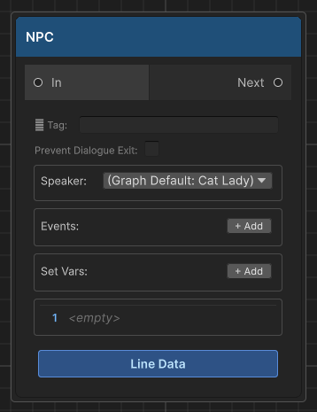
Shows one or more spoken lines from a character. The runner pauses after displaying each line and waits for the player to advance before moving to the next line. When all lines are shown, execution moves to the connected output node.
Execution order
- Set Vars actions are applied to
DialogueVariables(in list order) - Events are fired — local events trigger
OnNodeEvent; global events also triggerOnGlobalNodeEvent - Animator actions are sent to the matching speaker's
Animatorcomponent OnNPCNodefires on theDialogueRunner, which theDialogueManagercatches to begin line playback- Each Line in the list is displayed in sequence —
OnNPCLinefires per line, then the UI typewriter runs, then the per-linelinePausedelay, then the player advances (or space-to-skip) - After the last line,
Continue()is called and execution moves to the next connected node
Fields
Speaker
The name of the character speaking. Must exactly match the Speaker Name field on the NPCDialogue component in the scene.
- Leave blank to inherit the graph's Default Speaker
- Used for: camera look-at target, Animator resolution, 3D spatial audio positioning
- If the name is set but no matching
NPCDialogueis found in the scene, a warning is logged and the line is still displayed (just without look-at/audio positioning)
Events (+ Add)
Fires named string events when this node is reached (before lines are shown).
| Field | Description |
|---|---|
| Key | The event string. Received by OnNodeEvent subscribers and NPCDialogue.NodeEvents response list |
| Global | Off = Local: only fires OnNodeEvent. Guard your handler with CurrentActor to scope it to this NPC. On = Global: also fires OnGlobalNodeEvent. No guard needed — intentionally broadcast to all listeners. |
Multiple events are fired in list order. Empty keys are skipped.
Set Vars (+ Add)
Applies variable write operations the moment this node is reached, before events fire.
| Field | Description |
|---|---|
| Variable Name | Dropdown of variable names from all assigned DialogueVariables assets |
| Operator | Set / Add / Subtract / Toggle |
| Value | Operand string. Use true/false for Bool. Ignored for Toggle. |
Operations by type:
| Operator | Bool | Int | String |
|---|---|---|---|
| Set | var = value |
var = value |
var = value |
| Add | (unsupported) | var += value |
(unsupported) |
| Subtract | (unsupported) | var -= value |
(unsupported) |
| Toggle | var = !var |
(unsupported) | (unsupported) |
Animators (+ Add)
Sets Animator parameters on a speaker's Animator component, fired after events.
| Field | Description |
|---|---|
| Parameter Name | Exact Animator parameter name (case-sensitive) |
| Type | Trigger / Bool / Int / Float |
| Value | Visible for Bool / Int / Float; hidden for Trigger |
| Speaker (override) | Target a different speaker's Animator. Leave blank to use the node's own Speaker field. |
Lines (+ Add Line)
The spoken text. Each entry has:
- Text field — the dialogue string. Multiline. Supports
{varName}and{varName:name}tokens (see Variables — text substitution).
Audio clips and animator actions per line are managed through the Line Sheet — a companion asset created automatically alongside the graph. Open it via the Line Data button on the node, or via Line Sheet Editor in the graph editor sidebar. See Line Sheet for details.
Player Choice Node [C]
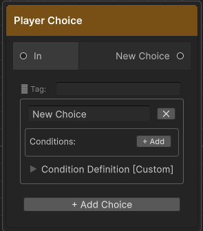
Presents the player with a list of choices. Each choice is its own output port connecting to a separate branch. Unlike NPC nodes, the runner does not auto-advance — it waits for SelectChoice(index) to be called, which your UI does when the player clicks a button.
Execution order
- Runtime keys are stamped on each choice:
{nodeGuid}:{choiceIndex} - Conditions are evaluated on each choice (inline variable conditions first, then ConditionDefinition)
OnChoiceNodefires with the evaluated list- UI displays choices; player picks one
SelectChoice(index)is called → execution follows that choice's output port
Fields
Choice cards (+ Add Choice)
Each card has:
| Field | Description |
|---|---|
| Text | The choice label shown to the player. Supports {varName} tokens. |
| Output port | Drag from this port to the node for this branch |
| ✕ button | Removes this choice card and its output port |
Conditions (+ Add inside a choice card)
All condition rows use AND logic — every row must pass for the choice to be selectable.
| Field | Description |
|---|---|
| Variable | Dropdown of names from your DialogueVariables assets |
| Operator | Equal / NotEqual / GreaterThan (>) / GreaterOrEqual (>=) / LessThan (<) / LessOrEqual (<=). Numeric operators are hidden automatically for Bool and String variables. |
| Value | Type-aware field — checkbox for Bool, integer field for Int, text field for String. Updates automatically when you change the variable. |
| Hide | Checked = completely hide this choice when the condition fails. Unchecked = show greyed-out and locked. |
| NOT | Inverts this individual row's result before it contributes to the AND chain |
| ✕ | Removes this condition row |
When a condition fails and Hide is unchecked, the choice shows in the UI with an is-locked USS class — typically rendered greyed out and unclickable, with IsLocked = true on the ChoiceData.
When Hide is checked, IsHidden = true on the ChoiceData and the built-in DialogueUI removes it from the list entirely. If you build a custom UI, filter out IsHidden choices before rendering.
Condition Definition [Custom] (foldout inside each choice card)
An optional advanced condition linking a ConditionDefinition asset to a C# handler. Expand the Condition Definition [Custom] foldout inside the choice card.
| Field | Description |
|---|---|
| Asset field | Click the object picker (⊙) and select a ConditionDefinition ScriptableObject |
| Parameter | String passed to ConditionService.Evaluate(def, param) |
| Negate | Inverts the C# condition result |
This condition is evaluated after all inline variable conditions. If any inline condition already failed, this is not evaluated (the choice is already locked).
The Condition Definition foldout auto-expands when an asset is already assigned.
End Node [E]
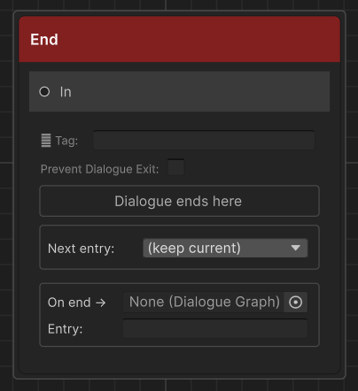
Terminates the current dialogue. Clears CurrentActor, releases blocking, hides the UI, then fires OnDialogueEnd and OnDialogueEnded. CurrentActor is already null by the time OnDialogueEnd subscribers are notified.
Fields
Next entry (dropdown)
Sets the actor's active entry point for the next conversation before dialogue ends.
| Value | Effect |
|---|---|
| (keep current) | Actor's entry point is unchanged after this conversation |
| Any named key | Actor's ActiveEntryPointKey is set to that key automatically |
This is how you advance NPC story state without a single line of code. Only entry points defined in the current graph appear in the dropdown.
See Entry Points for the full workflow.
On end → (sub-graph slot)
An optional DialogueGraph asset field and entry point key. When a graph is assigned here:
- The
Next entryswitch fires first — the actor's entry point is updated - The assigned graph runs as a sub-routine
- When that sub-graph's End node is reached, the conversation truly closes
This is useful for routing a quest NPC back to generic idle lines automatically when a unique quest conversation ends — without duplicating a single line.
Branch Node [B]
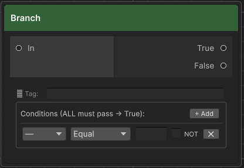
Silently evaluates one or more variable conditions and routes execution to a True or False output port. No dialogue is shown — execution passes through immediately.
Execution order
- All condition rows are evaluated in list order (AND logic)
- If all pass → True port is followed
- If any fail → False port is followed
- If a port has no connection → dialogue ends
Fields
Conditions use the same fields as Player Choice inline conditions (Variable, Operator, Value, NOT, ✕), but there is no Hide checkbox — Branch nodes are never visible to the player.
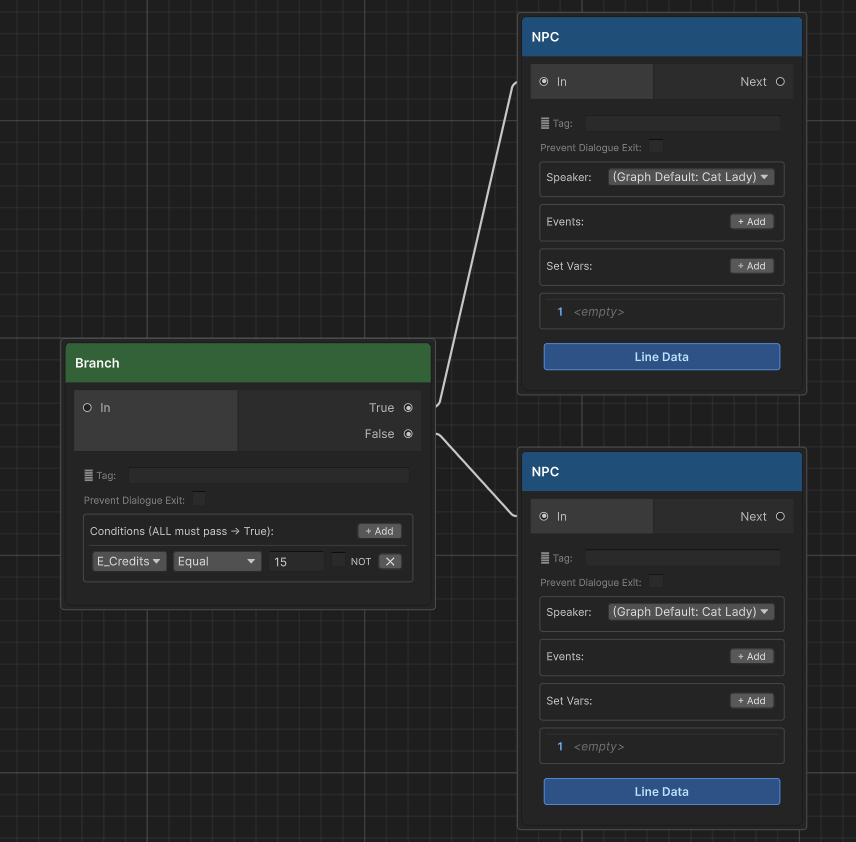
Sub Graph Node [S]
Delegates execution to another DialogueGraph asset, then returns and continues from the connected output — exactly like a function call in code. Use it to share common dialogue sequences (generic greetings, shop flows, idle lines) across many different NPC graphs without duplicating content.
Fields
| Field | Description |
|---|---|
| Graph | The DialogueGraph asset to call. Drag from the Project window or use the object picker. |
| Entry Point | Optional entry point key. Leave blank to start from the sub-graph's default start node. |
Speaker resolution
NPC nodes inside the sub-graph resolve speaker name through a three-level chain:
- Node Speaker — the speaker set directly on that NPC node
- Graph Default Speaker — the
DefaultSpeakerNameset on the sub-graph itself - Calling actor's speaker name — the
SpeakerNamefrom theIDialogueActorthat started the top-level conversation
This means a shared graph with blank speaker fields will automatically display and look at whoever triggered the dialogue — no extra setup required.
Depth limit
Sub-graphs can be nested up to 16 levels deep. Exceeding this limit logs an error and ends the dialogue cleanly to prevent infinite loops.
End Node "On end →" sub-graph slot
The End Node has an optional graph reference and entry point key in its On end → section. When set, that graph runs as a sub-routine before the conversation truly closes — useful for routing an NPC back to generic idle lines after a quest-specific conversation. The Next entry switch fires first so the actor's entry point is already updated while the sub-graph plays.
Not available in bark graphs. Sub Graph Node is hidden from the sidebar and context menu when Graph Type is set to Bark.
See Sub-Graph for full patterns and use-case walkthroughs.
Set Variable Node [V]
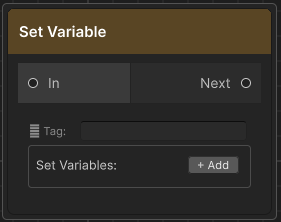
Silently applies one or more variable write operations and advances. No dialogue is shown.
Use this when you need to write variables at a precise point in the flow without attaching the action to an NPC node. Useful for:
- Setting flags at the start or end of a branch
- Initialising counters before a looping section
- Marking story progression at dead-end branches
Fields
Same as the Set Vars section on a NPC Node (Variable Name, Operator, Value). Multiple rows are applied in list order.
The value field is type-aware — it shows a checkbox for Bool variables, an integer field for Int variables, and a text field for String variables. The operator dropdown hides options that don't apply to the selected type (Add/Subtract hidden for Bool/String; Toggle hidden for Int/String; value field hidden entirely when operator is Toggle).
Random Node [R]
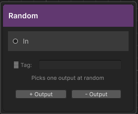
Picks one of its output ports at random each time it is reached. Every output has equal probability — there is no weighting system.
Fields
| Control | Description |
|---|---|
| + Output | Adds a new output port (labelled Output 1, Output 2, …) |
| − Output | Removes the last output port |
Each output port connects to a separate branch. At least one output is required. If a selected output has no connection, dialogue ends.
Practical uses: ambient NPC variety (different greetings on repeat visits), randomised story fragments, loot tables embedded in narrative.
Jump Node [J]
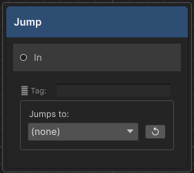
Redirects execution to any node in the same graph identified by its ⚐ Tag (Return Tag). Has no output port. Execution jumps immediately — no dialogue is shown.
Use Jump nodes to:
- Loop back to an earlier part of the graph (e.g. repeat a menu until the player picks "Goodbye")
- Share a common ending branch from multiple paths without drawing crossing edges
- Avoid long edges across large graphs
Fields
| Field | Description |
|---|---|
| Jumps to (dropdown) | Lists every ⚐ Tag set on a node in this graph. Select the target tag. |
| ↺ Refresh | Re-scans the graph for tags added after this Jump Node was placed |
The jump target is resolved by tag string at runtime. If the tag no longer exists in the graph when dialogue runs, the runner logs an error and ends the dialogue.
Set the ⚐ Tag on the target node, not on the Jump Node itself.
Debug Node [D]
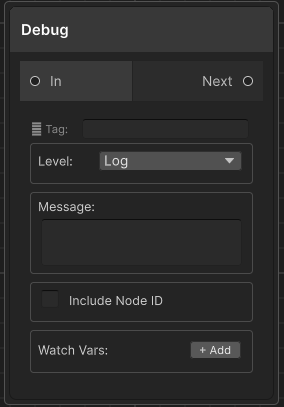
Logs a message to the Unity Console when reached. Passes through silently — the player never sees it. Execution continues to the connected output node immediately.
Fields
| Field | Description |
|---|---|
| Level | Log (white), Warning (yellow — node title bar turns yellow), Error (red — node title bar turns red) |
| Message | Text written to the Console. Multiline. |
| Include Node ID | Prepends the node's short GUID to the message, useful when multiple Debug nodes log similar text |
| Watch Vars (+ Add) | Variable name dropdown. The current runtime value of each listed variable is appended to the log output, e.g. [foundCat=true] [gold=42] |
The console prefix is color-coded by level: [<color=cyan>DialogueDebug</color>] for Log, yellow for Warning, red for Error — matching the color conventions used by all other Threader runtime logs.
Wait Node [F5]
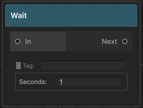
Pauses execution for a set duration in real-time seconds, then advances silently. No dialogue is shown.
Internally, DialogueManager starts a coroutine that calls runner.Continue() after the delay. The wait cannot be skipped by the player — it runs to completion regardless of input.
In the Dialogue Preview Window, the wait is skipped instantly so you can step through graphs without sitting through delays.
Fields
| Field | Description |
|---|---|
| Seconds | Float, minimum 0. A value of 0 advances on the next frame. |
Practical uses: dramatic pauses between automatic lines, pacing cutscene sequences, spacing between timed Play Audio clips.
Fire Event Node [F2]
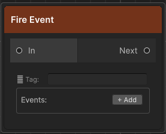
Silently broadcasts one or more named events and advances. No dialogue is shown. Uses the same OnNodeEvent / OnGlobalNodeEvent callbacks as NPC node events.
Use this when you need to trigger a game system at a precise point in the conversation flow without attaching the event to an NPC speak node — for example, triggering a door to open between two branches, or spawning an enemy after a dramatic reveal.
Fields
| Field | Description |
|---|---|
| Key | The event string. Received by OnNodeEvent subscribers. |
| Global | Off = Local (fires OnNodeEvent only). On = Global (fires both OnNodeEvent and OnGlobalNodeEvent). |
| ✕ | Removes this event row |
Multiple events are fired in list order.
Play Audio Node [F3]
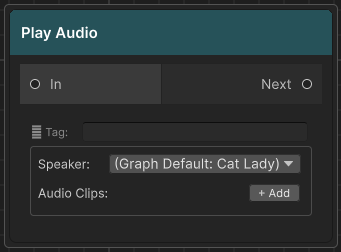
Plays one or more AudioClip assets and advances immediately — it does not wait for playback to finish. All clips fire in list order via the DialogueManager's audio sources.
Fields
| Field | Description |
|---|---|
| Speaker | Name of the registered speaker whose world position is used for 3D spatial audio. Leave blank to fall back through: graph's Default Speaker → current actor's speaker name. If none resolves or no matching speaker is registered, the 2D fallback AudioSource on the DialogueManager is used instead. |
| Audio Clips (+ Add) | AudioClip object fields. Drag assets in. Null slots are skipped. |
| ✕ | Removes a slot |
If a matching speaker transform is found, the spatial AudioSource is repositioned to that transform and plays with full 3D (spatialBlend = 1). If not, the 2D AudioSource plays instead.
Because Play Audio Node advances immediately, it's best for short stings and sound effects. For per-speaker voice lines that the dialogue waits for, assign clips in the graph's Line Sheet.
Animator Trigger Node [F4]
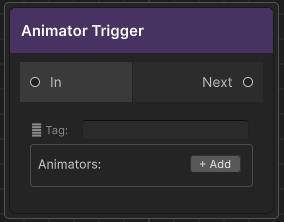
Silently sets one or more Animator parameters on registered speakers and advances. No dialogue is shown.
Use this to trigger animations at precise moments in dialogue flow without tying them to an NPC speak node — for example, playing a gesture animation between two NPC lines, or triggering a walk cycle after a dialogue branch resolves.
Fields
Each action card has:
| Field | Description |
|---|---|
| Parameter Name | Exact Animator parameter name (case-sensitive) |
| Type | Trigger / Bool / Int / Float |
| Value | Visible and editable for Bool, Int, Float. Hidden for Trigger. |
| Speaker (override) | Name of the registered speaker whose Animator to target. Blank = falls back through: graph's Default Speaker → current actor's speaker. |
| ✕ | Removes this action card |
The Animator is found via GetComponentInChildren<Animator>() called on the speaker's transform at RegisterSpeaker time (i.e. when the NPCDialogue component starts) and cached for the duration of the session. If no Animator is found at registration, a warning is logged and the action is skipped.
Shared: Return Tag (⚐ Tag field)
Every node has a ⚐ Tag field at the top. This is the node's Return Tag — a string identifier used exclusively as a Jump Node target.
- Leave blank if no Jump Node needs to target this node
- Tags must be unique within a graph (the validator will warn you about duplicates)
- Tags are resolved at runtime by string comparison — renaming a tag after a Jump Node references it will break the jump
The tag is displayed as a small badge on the node in the graph editor when set.
Shared: Prevent Dialogue Exit
Every node also has a Prevent Dialogue Exit toggle (shown below the ⚐ Tag field). When enabled:
DialogueManager.CancelDialogue()is a no-op while this node is active- The built-in Escape-key handler in
DialogueUIis ignored DialogueManager.CanCancelreturnsfalse
Use this to protect nodes that write variables, grant quest rewards, or play mandatory story beats that must not be interrupted. The validator will flag any locked node that has no reachable End node, since that would leave the player permanently stuck.